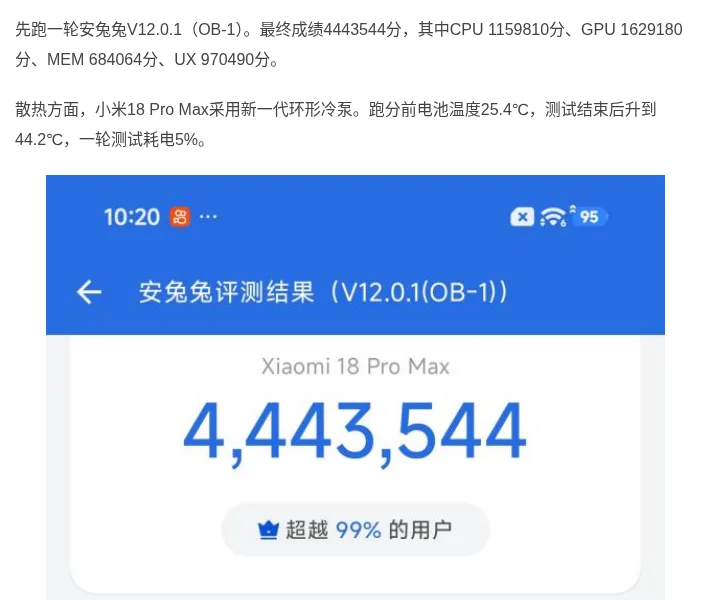
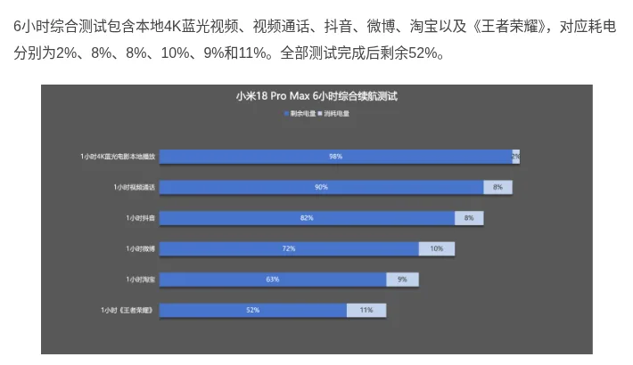
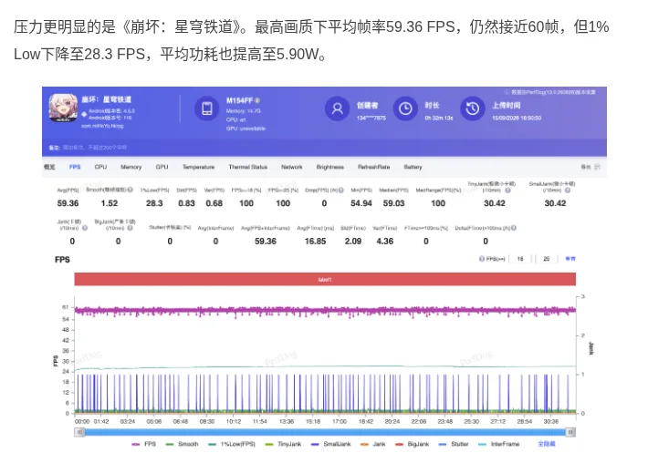
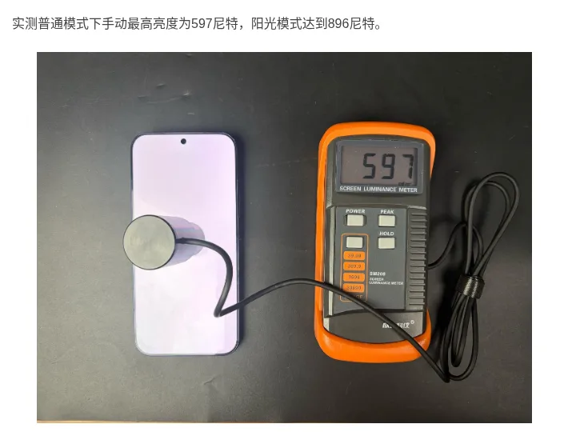
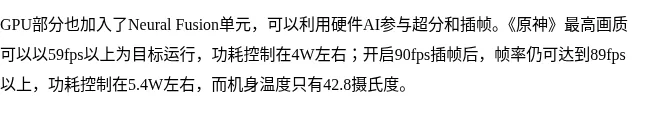
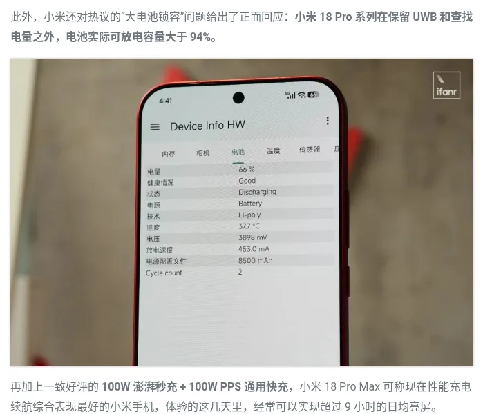
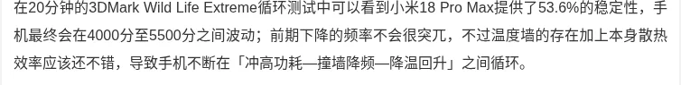
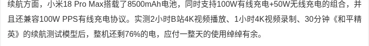
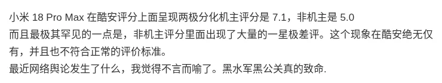
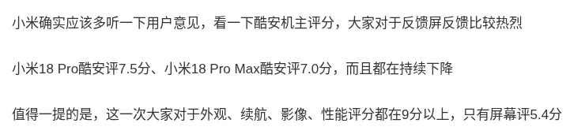

تقنية8 دقائق
شاومي 18 برو ماكس بعد شهر من إطلاقه في الصين: بطارية 8500 مللي أمبير تُقنع الملّاك وشاشة الخصوصية تقسمهم
مقدمة
أطلقت شاومي هاتف Xiaomi 18 Pro Max في الصين يوم 23 سبتمبر 2026، وبدأ بيعه في اليوم نفسه بسعر 6,999 يوان لنسخة 12+256 جيجابايت، وهو رقم يطابق جدول الأسعار المعتمد لدينا.
الهاتف متوفر حالياً بنسخته الصينية فقط. شاومي أكدت إطلاقاً عالمياً "لاحقاً هذا العام"، بينما تتحدث تسريبات أوروبية (غير رسمية) عن سعر يبدأ من 1,649 يورو وبطارية أصغر بسعة 7,050 مللي أمبير.
في هذا التقرير نجمع ما نشرته مراجعات صينية مستقلة وآراء الملّاك على منصة Coolapk (酷安)، ونشير إلى ما تتعارض فيه المصادر.

المواصفات الأساسية
| المواصفة | التفاصيل |
|---|---|
| المعالج | Snapdragon 8 Elite Extreme Gen 6 بدقة تصنيع 2 نانومتر |
| الشاشة الرئيسية | 6.9 بوصة LTPO OLED بدقة 2624×1208 وتردد 1–120 هرتز وذروة سطوع رسمية 4000 شمعة |
| الشاشة الخلفية | 2.9 بوصة بدقة 976×596 وتردد حتى 120 هرتز |
| الذاكرة والتخزين | 12 أو 16 جيجابايت LPDDR5X مع 256 جيجابايت حتى 1 تيرابايت UFS 4.1 |
| الكاميرا الرئيسية | 200 ميجابكسل بمستشعر 1/1.28 بوصة وفتحة f/1.67 ومثبت بصري |
| كاميرا التقريب | 200 ميجابكسل بيريسكوب 75 مم (تقريب بصري 3.2x) بمستشعر Samsung HP5 قياس 1/1.56 بوصة |
| الكاميرا فائقة الاتساع | 50 ميجابكسل بزاوية 102 درجة |
| الكاميرا الأمامية | 50 ميجابكسل |
| البطارية | 8500 مللي أمبير (النسخة الصينية) |
| الشحن | 100 واط سلكي، 50 واط لاسلكي، 27 واط عكسي |
| الوزن والسماكة | 235 أو 240 غراماً حسب اللون، وسماكة 8.4 مم |
| النظام | HyperOS 4 مبني على Android 17 |
| السعر في الصين | من 6,999 يوان (12+256) حتى 9,999 يوان (16 جيجابايت + 1 تيرابايت) |
تنبيه حول تعارض المصادر: IT之家 وFoneArena يذكران مقاومة IP66 وIP68 وIP69، بينما تكتفي صفحة GSMArena بذكر IP68. كما تصف ITmedia الشحن العكسي بأنه لاسلكي بقدرة 27 واط، في حين تذكر FoneArena أنه سلكي ولاسلكي معاً.

تقييم الملّاك على Coolapk
جاء تقييم الهاتف على Coolapk منقسماً بشكل لافت. في 28 سبتمبر نقل مدوّن تقني على Weibo أن تقييم الملّاك بلغ 7.1 من 10، مقابل 5.0 لغير الملّاك، مع عدد كبير من تقييمات النجمة الواحدة من غير الملّاك.
منشور آخر في اليوم نفسه ذكر تقييم ملّاك قدره 7.1 وتقييماً عاماً قدره 5.2. ومدوّن ثالث نقل رقماً قدره 7.0 للنسخة Max و7.5 للنسخة Pro، وقال إن التقييمات تواصل الانخفاض.
النقطة الأهم في هذه المنشورات أن التصميم والبطارية والكاميرا والأداء نالت كلها أكثر من 9 من 10، بينما حصلت الشاشة على 5.4 فقط. وجاء ذلك تحت عنوان "سلسلة شاومي 18"، أي أنه غير مخصص للنسخة Max وحدها.
| المعيار | التقييم |
|---|---|
| تقييم الملّاك (28 سبتمبر) | 7.1/10 (ومصدر آخر: 7.0/10) |
| تقييم كل المستخدمين | بين 5.0 و5.2 من 10 |
| الشاشة (على مستوى السلسلة) | 5.4/10 |
| التصميم، البطارية، الكاميرا، الأداء | أعلى من 9/10 |
ملاحظات منهجية: لم تذكر أي من هذه المنشورات عدد المقيّمين، فحجم العينة غير معروف. كما نشر حساب آخر على Weibo تقييماً للملّاك قدره 7.9 وعاماً قدره 6.4 تحت اسم "سلسلة شاومي 18" دون أن يحدد الطراز، وهذا يتعارض مع الأرقام السابقة. ولم يتسنَّ لنا التحقق من هذه الأرقام عبر صفحة Coolapk مباشرة.
تتركز شكاوى الملّاك، بحسب تقارير Sina Finance وSohu، على شاشة الخصوصية: انخفاض السطوع وميل الألوان إلى الأخضر عند النظر من زاوية جانبية، وإرهاق العين لدى بعضهم. وطالب عدد من المستخدمين علناً بنسخة بلا ميزة الخصوصية.
ظهر أيضاً جدل حول مورّد ذاكرة التخزين (飞存闪拓). نقل أحد المدوّنين أن كل وحدات التخزين في السلسلة من نوع TLC، لكننا لم نجد تأكيداً رسمياً مستقلاً لذلك.
البطارية والشحن
هنا تجتمع المصادر على أداء قوي. في اختبار AnTuTu الشامل لست ساعات (فيديو 4K محلي، ومكالمة فيديو، وDouyin، وWeibo، وTaobao، ولعبة Honor of Kings) بقي في البطارية 52%.

وفي اختبار ثلاث ساعات متواصلة من الألعاب، استهلكت Honor of Kings نحو 7% وStar Rail نحو 17% وGenshin Impact نحو 12%، فانتهى الاختبار عند 64%.

تقرير منشور على Weibo أجرى اختباراً مختلفاً: ساعتان من فيديو 4K على Bilibili، وساعة تصوير 4K، ونصف ساعة من PUBG Mobile (和平精英)، وانتهى بنسبة 76% متبقية.
أما الحديث عن "16 ساعة و33 دقيقة حتى نفاد البطارية" و"59% متبقية بعد خمس ساعات استخدام كثيف" فقد ورد في مقال تجميعي على Sina لم يحدد الجهة التي أجرت الاختبار ولا طريقته، لذا نعرضه بتحفّظ.
في الشحن، وصل الهاتف في اختبار AnTuTu من 1% إلى 22% خلال 10 دقائق، و56% خلال 30 دقيقة، و100% خلال 60 دقيقة. وفي تقرير Weibo احتاج 59 دقيقة حتى 100%، و67 دقيقة حتى انتهاء الشحن البطيء النهائي.

الأداء والحرارة
سجّل الهاتف على AnTuTu V12 مجموع 4,443,544 نقطة في مراجعة موقع AnTuTu، وارتفعت حرارة البطارية من 25.4 إلى 44.2 درجة خلال الاختبار. أما تقرير Weibo فذكر نحو 4.77 مليون نقطة مع تفعيل وضع الأداء، والفارق يعود على الأرجح إلى اختلاف وضع التشغيل.

في الألعاب بأعلى إعدادات ولمدة 30 دقيقة لكل لعبة (اختبار AnTuTu):
- Honor of Kings: متوسط 120.14 إطاراً وأدنى 1% عند 106.1، وحرارة 38.2 درجة للوجه الأمامي.
- Genshin Impact: متوسط 59.96 إطاراً وأدنى 1% عند 50.9، وحرارة 37.4 درجة.
- Honkai: Star Rail: متوسط 59.36 إطاراً، لكن أدنى 1% هبط إلى 28.3، والاستهلاك 5.90 واط، والحرارة 44.2 درجة أمامياً و41.8 درجة خلفياً.


اختبار Weibo للأداء المستمر يكمل الصورة. حافظ الهاتف على 53.6% فقط من أدائه في دورة 3DMark Wild Life Extreme لمدة 20 دقيقة، متذبذباً بين رفع الاستهلاك ثم خفض التردد. وفي Steel Nomad Light كانت نسبة الثبات 81.2%. التقرير نفسه أشار إلى تقطعات خفيفة في Genshin خلال 10 دقائق، إذ نزل أدنى 1% إلى 26.5 إطاراً.
الخلاصة هنا: الحرارة في الألعاب معتدلة، لكن الأداء الرسومي المستمر تحت الضغط الكامل ليس ثابتاً.
الكاميرا
النظام مبني على مستشعرين بدقة 200 ميجابكسل. لاحظت مراجعة AnTuTu أن ألوان التقريب 2x مشبعة بوضوح، وأن العدسة 75 مم (3.2x) هي الأكثر استخداماً في الحياة اليومية. أما تقرير Weibo فاعتبر هذا البعد البؤري أفضل تغيير في الجيل الجديد مقارنة بتقريب 5x السابق.
أضافت شاومي نمط ألوان ثالثاً باسم "原色" (الألوان الأصلية)، إلى جانب ميزة "传奇一瞬" التي تعالج الصور سحابياً. بحسب تقرير Weibo تتيح الميزة 60 صورة مجانية شهرياً، وتعتمد على جودة الاتصال بالشبكة.
العدسة فائقة الاتساع تتوقف عند 17 مم (0.7x)، وهذا أضيق من بعض المنافسين.
الشاشة
قاس موقع AnTuTu سطوعاً يدوياً أقصى قدره 597 شمعة، ووصل إلى 896 شمعة في وضع ضوء الشمس. الفارق كبير عن رقم 4000 شمعة الرسمي، لأن الرقم الرسمي هو ذروة موضعية وليس سطوع الشاشة كاملة.

تقول شاومي إن سطوع الضوء الجانبي عند زاوية 45 درجة ينخفض إلى أقل من 3% عند تفعيل الخصوصية. ويمكن تفعيلها للإشعارات أو النوافذ أو التطبيقات الحساسة فقط.
لكن هذه الشاشة نفسها هي مصدر أدنى تقييم لدى الملّاك (5.4 من 10)، كما ذكرنا أعلاه.

النظام والبرمجيات
يعمل الهاتف بنظام HyperOS 4 المبني على Android 17. وقد أضافت شاومي بطاقات تطبيقات للشاشة الخلفية يتجاوز عددها 100، مع إمكانية توليد بطاقات بالذكاء الاصطناعي.
لاحظت مراجعة AnTuTu أن بطاقات الذكاء الاصطناعي ما زالت تجريبية وكثيرة الأخطاء. كما أن بعض مهام المساعد الذكي تتطلب اشتراكاً مدفوعاً، وزر الذكاء الاصطناعي الجانبي يسهل الخلط بينه وبين زر التشغيل.
تقييمات المصادر الصينية
| المصدر | ما اختبره | النتيجة | الرابط |
|---|---|---|---|
| WHYLAB 微机分 | البطارية والشاشة والشحن | لم يُختبر بعد. لم نعثر على اختبار منشور للهاتف. | - |
| Geekerwan 极客湾 | الأداء والكفاءة والحرارة | لم يُختبر بعد. المنشور حاليًا قاعدة بيانات كفاءة المعالجات فقط، دون اختبار للهاتف نفسه. | SOCPK |
| Coolapk 酷安 (عبر منشورات Weibo) | تقييم الملّاك والشكاوى | 7.1 من 10 للملّاك و5.0 لغير الملّاك (28 سبتمبر)، والشاشة 5.4 من 10. الشكوى الرئيسية: شاشة الخصوصية (ميل إلى الأخضر وانخفاض السطوع من الجانب). | منشور 1 · منشور 2 |
| AnTuTu 安兔兔 | البطارية والشحن والألعاب والسطوع | 6 ساعات استخدام مختلط: بقي 52%. 3 ساعات ألعاب: بقي 64%. شحن من 1% إلى 100% في 60 دقيقة. Star Rail: متوسط 59.36 إطارًا وأدنى 1% عند 28.3، و44.2 درجة للوجه الأمامي. سطوع يدوي 597 شمعة و896 في ضوء الشمس. | الرابط |
| 差评 (منشور عبر ZAKER) | الأداء الرسومي والألعاب والبطارية | 3DMark Steel Nomad Light: 3572 نقطة، وSolar Bay Extreme: 1883. Genshin نصف ساعة: 59.86 إطارًا بقدرة 3.77 واط وحرارة قصوى 48.7 درجة. Star Rail نصف ساعة: 57.71 إطارًا بقدرة 6.34 واط وحرارة قصوى 57.1 درجة. 3 ساعات اختبار متنوع: بقي 80%. | الرابط |
| ZOL 中关村在线 | الألعاب والحرارة (تجربة شخصية بحسب الموقع، وليست اختبارًا احترافيًا) | Genshin بأعلى إعدادات: فوق 59 إطارًا بنحو 4 واط. مع توليد الإطارات إلى 90: فوق 89 إطارًا بنحو 5.4 واط، وحرارة الهيكل 42.8 درجة. | الرابط |
| 爱范儿 (منشور عبر Tiger Brokers) | الاستخدام اليومي | أكثر من 9 ساعات يوميًا من تشغيل الشاشة خلال أيام التجربة. ونقل عن شاومي أن السعة القابلة للتفريغ فعليًا تزيد على 94%. | الرابط |
| مراجعة على Weibo (الكاتب غير محدد) | ثبات الأداء والبطارية والشحن | ثبات 53.6% في 3DMark Wild Life Extreme لمدة 20 دقيقة. بقي 76% بعد ساعتين فيديو وساعة تصوير ونصف ساعة PUBG. شحن حتى 100% في 59 دقيقة. | الرابط |
| IT168 | انطباع عام | وصف الهاتف بأنه بلا نقاط ضعف واضحة، دون أرقام اختبار منشورة. | قائمة المقالات |
| ITHome IT之家 | الإطلاق والمواصفات | لم يُختبر بعد. المنشور خبر إطلاق ومواصفات فقط. | الرابط |
| CNMO 手机中国، PConline، Zealer، Sina Tech | - | لم يُختبر بعد. لم نعثر على اختبار منشور. | - |
تتفق المصادر على أن البطارية قوية والشحن يصل إلى 100% في نحو ساعة، وإن اختلفت النسبة المتبقية حسب طريقة كل اختبار (من 52% إلى 80%). الخلاف الأوضح في الحرارة تحت الحمل الثقيل: AnTuTu سجّل 44.2 درجة في Star Rail، بينما سجّل 差评 حرارة قصوى 57.1 درجة في اللعبة نفسها مع تذبذب الإطارات في آخر 10 دقائق، والفرق قد يعود إلى نقطة القياس ومدة الاختبار. أما الملّاك فيضعون الشاشة في أدنى التقييمات رغم الإشادة بباقي الجوانب.
آخر تحديث للتقييمات: 22 أكتوبر 2026










نقاط القوة والضعف
- نقطة قوة: بطارية 8500 مللي أمبير بنتائج قوية في اختبارات مستقلة متعددة.
- نقطة قوة: الحرارة في الألعاب الشائعة معتدلة، والإطارات قريبة من الحد الأقصى في المتوسط.
- نقطة قوة: شحن سريع يصل إلى 100% في نحو ساعة، مع دعم بروتوكول PPS المفتوح.
- نقطة ضعف: شاشة الخصوصية تثير شكاوى من ميل الألوان إلى الأخضر وانخفاض السطوع على الجانبين.
- نقطة ضعف: الأداء الرسومي المستمر متذبذب (ثبات 53.6% في أحد اختبارات 3DMark).
- نقطة ضعف: الوزن يصل إلى 240 غراماً، وبعض ميزات الذكاء الاصطناعي مدفوعة أو تجريبية.
نصائح للمشتري في الخليج (النسخة الصينية)
ما يلي نصائح عامة، وليست نتيجة اختبار ميداني في المنطقة:
- الشبكات: بحسب GSMArena تدعم النسخة الصينية نطاقات الجيل الخامس n78 وn41 وn1 وn3 وn28، ونطاقات 4G الشائعة مثل 1 و3 و7 و20 و28 و40. تأكد من النطاقات التي يستخدمها مشغّلك قبل الشراء.
- خدمات Google: نسخ HyperOS الصينية لا تأتي عادة بخدمات Google مثبتة مسبقاً. قال موقع Frandroid إنه ثبّت خدمات Google Play على هاتف 18 Pro صيني (الشقيق الأصغر)، لكن بعض العناصر بقيت باللغة الصينية فقط.
- الضمان: الجهاز المستورد من الصين لا يشمله عادة ضمان الوكيل المحلي. اسأل البائع عن ضمانه الخاص وسياسة الإرجاع.
- الاستيراد: احسب الشحن والرسوم الجمركية فوق السعر الصيني، وتذكر أن النسخة العالمية المرتقبة قد تأتي ببطارية أصغر (7,050 مللي أمبير بحسب تسريبات أوروبية لم تُؤكَّد).
- لم تعلن شاومي حتى الآن أي سعر أو موعد رسمي في الخليج.
الخلاصة
يقدّم Xiaomi 18 Pro Max واحدة من أقوى بطاريات الفئة الرائدة مع شحن سريع، وتتفق الاختبارات المستقلة على ذلك. لكن تقييم الملّاك تراجع بسبب شاشة الخصوصية لا بسبب العتاد.
إذا كنت تنوي شراءه فجرّب الشاشة بنفسك من زوايا جانبية قبل الدفع. أما الأداء الرسومي المستمر فيكفي معظم الألعاب، لكنه ليس الأكثر ثباتاً تحت الضغط الكامل.
عتاد قوي وبطارية مطمئنة، والشاشة هي ما يجب أن تختبره بعينك قبل الشراء.
#midroid5G #Xiaomi